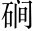

鍾山之英，草堂之靈，馳煙驛路，勒移山庭鍾山，即北山也。其南有草堂寺。英、靈，皆言其神也。驛，傳也。勒，刻也。謂山之英靈，驅馳煙霧，刻移文于山庭也。○起便點出「北山移文」四字大意。蕭子顯《齊書》雲：孔稚珪，字德璋，會稽人也。鍾山，在北郡，其先周彥倫隱於此。後應詔出為海鹽令，秩滿入京，復經此山。孔生乃借山靈之意移之，使不許再至，故云《北山移文》。。
夫以耿介拔俗之標，瀟灑出塵之想志超塵俗。，度鐸。白雪以方潔，幹青雲而直上度，比也。幹，觸也。○行極清高。，吾方知之矣此等隱者，吾正知為必不可得矣。。若其亭亭物表，皎皎霞外，芥千金而不盼，屣萬乘其如脫亭亭，高聳貌。皎皎，潔白貌。芥，草也。盼，顧也。屣，草履。言視千金、萬乘如草芥、脫屣也。，聞鳳吹於洛浦周靈王太子晉，吹笙作鳳鳴，遊於伊、洛之間。，值薪歌於延瀨賴。○蘇門先生遊於延瀨，見一人採薪，謂之曰：「子以此終乎？」採薪人曰：「吾聞聖人無懷，以道德為心，何怪乎而為哀也！」遂為歌二章而去。，固亦有焉此等隱者，世亦有之。。豈期終始參差，蒼黃反覆，淚翟子之悲，慟朱公之哭參差，不一也。反覆，不定也。翟，墨翟。朱，楊朱。墨子見素絲而泣之，為其可以黃、可以黑。楊子見歧路而哭之，為其可以南、可以北。士無一定之志，不能免二人之悲哭。，乍回跡以心染，或先貞而後黷乍，暫也。回，避也。暫避跡山林，而心猶染於俗也。黷，垢也。，何其謬哉謬，誑也。此等隱者，何其欺誑人世，一至此哉！○已上泛論夫隱者有此三等，尚未說到周顒。！嗚呼！尚生不存，仲氏既往，山阿寂寥，千載誰賞尚生，尚子平也。仲氏，仲長統也。范曄《後漢書》曰：尚子平「隱居不仕，性尚中和，好通《老》、《易》」。仲長統性俶儻，默語無常。「每州郡命召，輒稱疾不就」。言無此二人，使山阿空虛，千載已來，無人賞樂。○承上起下，感慨情深。？
世有周子周顒，字彥倫，汝南人。○入題。，俊俗之士俊俗，俗中之俊士也。；既文既博，亦玄亦史玄，謂莊、老之道。史，謂文多質少。。然而學遁東魯，習隱南郭東魯，謂顏闔也。魯君聞顏闔得道人也，使人以幣先焉。顏闔對曰：「恐聽謬而遺使者罪，不若審之。」使者反，審之，復來求之，則不得矣。南郭，謂南郭子綦也。隱几而坐，仰天㗳然，似喪其偶。言顒無本性，但學習此二人之隱遁也。；竊吹草堂，濫巾北嶽竊，盜也。吹，借用吹竽之吹。齊宣王好竽，必三百齊吹。南郭先生不竽者，而次三百人之中，以吹竽食祿。齊王薨，后王曰：「寡人好竽，欲一一吹之。」南郭乃逃。濫，僭也。巾，隱者之服。北嶽，即北山也。言顒盜居草堂，僭服幅巾。。誘我鬆桂，欺我雲壑。雖假容於江皋，乃纓情於好爵皋，澤也。纓，系也。好爵，謂人爵也。○以上總寫，以下分作兩截寫。。
其始至也顒始至北山時。，將欲排巢父甫。，拉蠟。許由，傲百氏，蔑王侯排，推也。拉，折也。巢父、許由，隱者之最也。百氏，百家諸子也。，風情張去聲。日，霜氣橫秋。或嘆幽人長往，或怨王孫不遊張，大也。橫，蓋也。幽人、王孫，隱者之稱。慕其長往故嘆之，疾其不遊故怨之。。談空空於釋部，核劾。玄玄於道流顒汎涉百家，長於佛理，著《三宗論》，兼善《老》、《易》。空空，以空明空也。釋部，佛經也。核，考也。玄玄，玄之又玄也。道流，謂老子也。。務光何足比，涓子不能儔務光，夏時人。湯得天下，已而讓光，光不受而逃。涓子，齊人也，好餌術，隱於宕山。○以上寫顒初志如此。是前一截人。。
及其鳴騶入谷，鶴書赴隴鳴騶，載詔書車馬也。鶴書，即詔書，在漢謂之尺一簡，彷彿鶴頭，故有其稱。；形馳魄散，志變神動。爾乃眉軒席次，袂聳筵上，焚芰忌。制而裂荷衣，抗塵容而走俗狀軒，舉也。舉眉，謂喜也。次，側也。袂，衣袖也。袂聳，謂舉臂也。芰制、荷衣，隱者之服。言制芰、荷以為衣，互文也。今皆焚裂之。抗，舉也。走，騁也。。風雲悽其帶憤，石泉咽煙入聲。而下愴，望林巒而有失，顧草木而如喪悽、愴、憤、咽，皆怨怒貌。言此等雖無情，見山人去，亦如有喪失而怨怒也。。
至其紐金章，綰墨綬，跨屬城之雄，冠去聲。百里之首，張英風於海甸，馳妙譽於浙右紐，系也。綰，貫也。金章，銅章也。銅章墨綬，縣令之章飾也。跨，越也。管州之城為屬城縣，大率百里，言越眾城而為縣宰之稱首也。英風、妙譽，皆美聲也。海甸、浙右，所理邑近海，而在浙江之右也。。道帙長擯，法筵久埋。敲撲喧囂犯其慮，牒訴倥孔。傯總。裝其懷帙，書衣也。擯，棄也。法筵，講席也。埋，藏也。敲撲，謂打人聲也。牒，文牒也。訴，訴告也。倥傯，繁逼貌。言道書講席，永棄埋而聽訟也。。琴歌既斷，酒賦無續。常綢繆於結課，每紛綸於折獄琴歌、酒賦，皆逸人之務，今已斷絕無續也。綢繆，親近也。結課，考第也。紛綸，眾多貌。。籠張趙於往圖，架卓魯於前錄。希蹤三輔豪，馳聲九州牧漢張敞、趙廣漢俱為京兆尹，有名望。魯恭、卓茂，鹹善為令。籠、架，謂包舉也。三輔，謂京兆尹、左馮翊、右扶風。希蹤，希仿賢豪蹤跡也。牧，九州牧長。馳聲，謂皆得聞其聲名也。○以上寫顒繼志如此。是後一截人。。使其高霞孤映，明月獨舉，青松落蔭，白雲誰侶？澗。戶摧絕無與歸，石徑荒涼徒延佇言霞月徒舉映，無人賞玩，鬆蔭零落，白雲無與為偶。。至於還飆，水入幕，寫霧出楹，蕙帳空兮夜鶴怨，山人去兮曉猿驚也。摧絕，破壞也。荒涼，蕪穢也。延佇，遠望也。言不復更歸，徒為延望也。。昔聞投簪逸海岸，今見解蘭縛塵纓標。。
於是南嶽獻嘲爪平聲。，北隴騰笑，列壑爭譏，攢峰竦誚。慨遊子之我欺，悲無人以赴吊南嶽，謂南山也。嘲，調也。隴，亦山也。騰，起也。攢，蔟聚也。竦，上也。誚，譏也。言皆譏笑此山初容此人也。遊子，謂顒也。吊，問也。言山為顒所欺，而無人來問也。。故其林慚無盡，澗愧不歇，秋桂遣風，春蘿罷月，騁西山之逸議，馳東皋之素謁蘿，女蘿也，施於松柏。風月所以滋鬆桂之美，今既無人，故遣罷之。西山，謂首陽山。逸議，隱逸之議也。皋，澤也。素謁，謂以情素相告也。馳騁，宣佈也。謂宣佈於人使盡知之也。○以上言其遺羞山靈，所以醜之也。。
今又促裝下邑，浪栧異。上京。雖情投於魏闕，或假步于山扃。○下邑，謂海鹽也。浪，鼓也。栧，楫也。上京，建康也。言海鹽秩滿，催促行裝，駕舟赴京，以遷官也。魏闕，朝廷也。扃，山門也。言顒情實在朝廷，而又欲假跡再遊北山也。。豈可使芳杜厚顏，薜備。荔例。蒙恥，碧嶺再辱，丹崖重滓子。，塵遊躅逐。於蕙路，汙淥六。池以洗耳芳、杜、薜、荔，皆香草。躅，蹤跡也。淥，水清也。言豈可使芳草懷愧恥以相見，崖嶺再被滓穢，更以俗塵點我蕙草之路，汙濁我洗耳之池乎？。宜扃岫幌恍。，掩雲關，斂輕霧，藏鳴湍脫平聲。，截來轅於谷口，杜妄轡於郊端扃，閉也。岫幌，山窗也。雲關，謂以云為關鍵也。斂藏霧湍，使無見聞也。來轅、妄轡，謂顒之車乘也。谷口、郊端，山之外也。恐其親近，故截斷杜絕之。。於是叢條瞋嗔。膽，疊穎怒魄，或飛柯以折輪，乍低枝而掃跡。請回俗士駕，為君謝逋客條，木枝也。穎，草穂也。言條穗瞋怒，而擊折顒之車輪，掃去其跡也。俗士、逋客，謂顒也。謝，絕。逋，逃也。○以上言其不許再至，所以絕之也。。
假山靈作檄，設想已奇。而篇中無語不新，有字必雋。層層敲入，愈入愈精。真覺泉石蒙羞，林壑增穢。讀之令人賞心留盼，不能已也。